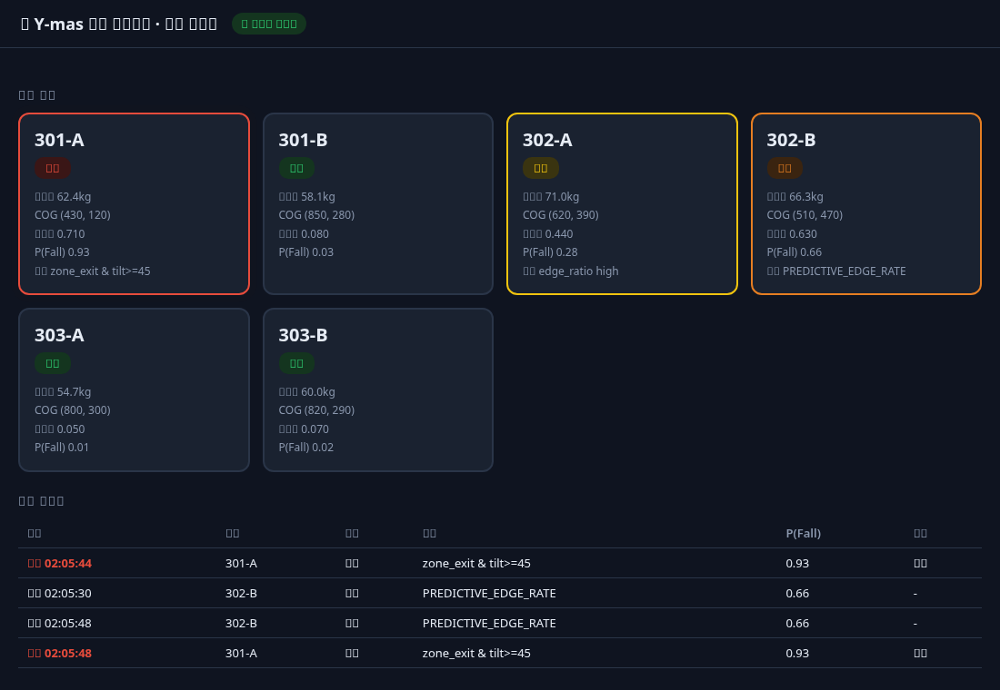

의료 Physical AI 솔루션 경진대회
Y-mas
침대가 스스로 감지하는 병실 낙상 예측 시스템 — 넘어지기 "전"에 알린다
AI반도체 전공 학부 연구팀
소속 대학 · Y-mas Team
분야: 의료 Physical AI
개발 배경 및 목적
- 낙상은 입원 환자 안전사고 1위. 골절·사망으로 이어지지만 간호 인력만으로 24시간 감시는 불가능하다.
- 카메라 단독 감시 → 사생활 침해와 소등(야간) 시 검출 실패. 웨어러블 → 환자 거부·미착용.
- 상용 제품 대부분은 "넘어진 뒤"를 감지. 임상적으로 의미 있는 개입은 넘어지기 전(Pre-Fall) 경보다.
→ 목표: 환자 접촉·사생활 침해 없이, 넘어지기 전 위험을 예측해 사전 경보하는 저비용·저지연 시스템.
솔루션 소개
Y-mas는 병실 침대 자체를 "저울"로 만들어 환자의 무게중심을 상시 읽고, 위험 조짐이 보이면 비전 AI가 깨어나 낙상을 확정하는 2단계(2-Tier) 융합 시스템이다.
주요 기능무게중심 편향 상시 감시 → 이탈 전조 포착 · 비전 AI 정밀 낙상 판정 · 간호 스테이션 즉시 알림
적용 대상낙상 고위험 입원 환자 (고령 · 수술 후 · 섬망 환자 등)
사용 환경병실 침대. 야간 소등 환경에서도 동작(적외선 기반) · 비접촉 · 비착용
핵심 기술 및 작동 방식
Tier 1 · 상시 감시
로드셀 4개 → HX711 → ESP32
무게중심(COG) 80Hz 감시
→
위험 신호 트리거
초저지연 네트워크 전송
↓
Tier 2 · 정밀 판정
적외선 카메라 → 자세 추정(YOLO11n-pose)
→ 3D 리프팅 → ST-GCN AI
→
Tier 3 · 알림
간호 스테이션
적외선(IR)
프레임
→
YOLO11n-pose
2D 17관절
→
Depth
3D 리프팅
→
NTU 25관절
매핑
→
ST-GCN v21
낙상 판정
- COG(무게중심): 네 모서리 하중비로 환자 위치를 계산 → 침대 가장자리로 쏠리는 "이탈 전조" 포착.
- ST-GCN: 관절(스켈레톤)을 그래프로 보는 동작 인식 AI. 자세·움직임으로 낙상/정상/위험 3종 분류.
- 엣지 추론: NVIDIA Jetson AGX Orin 에 TensorRT FP16 로 배포(클라우드 불필요, 데이터 외부 유출 없음).
| 구성 | 하드웨어 | 역할 |
|---|
| Tier 1 | 로드셀 ×4 → HX711 ×4 → ESP32 | 무게중심 80Hz 상시 감시 |
| Tier 2 | 적외선 ToF 카메라 → Jetson AGX Orin | 비전 AI 낙상 정밀 판정 |
| AI 모델 | ST-GCN (학습 파라미터 ≈1.48M) | 낙상/위험/정상 3종 분류 |
| 학습 데이터 | NTU RGB+D 120 + ETRI-Activity3D | 공개 3D 스켈레톤 34,681 시퀀스 |
하드웨어 구성 & 설치 개념
- 레일 플랫폼: 알루미늄 프로파일(30×60mm) 위에 침대를 올려 전체 하중을 4점으로 분산 측정.
- 3D 프린팅 인클로저: 센서·MCU 보호용 맞춤 하우징(CAD·STL 완비).
학습 데이터 현황
개인정보·사생활 문제가 없는 공개 3D 스켈레톤 데이터셋만 사용. 같은 센서 계열(Kinect V2 포맷)로 통일해 도메인 혼선을 차단했다.
| 데이터셋 | 샘플 수 | 클래스 분포 (정상/위험/낙상) | 피험자 |
|---|
| NTU RGB+D 120 | 27,679 | 20,114 / 6,618 / 947 | 54 |
| ETRI-Activity3D | 7,002 | 5,168 / 0 / 1,834 | 60 |
| 병합 | 34,681 | Train 18,771 · Val 9,803 · Holdout 6,107 | — |
- 데이터 과제: 동적 낙상(쓰러지는 순간) 샘플이 희소 → augmentation·정규화로 일반화 확보(v18→v21).
- 검증 방식: 학습에 쓰지 않은 Holdout 피험자로만 최종 성능 측정(과적합 차단).
주요 성과 및 차별점
1.000
동적 낙상 재현율
(Holdout 84/84)
| 버전 | 핵심 개선 | 낙상 재현율 | 오경보 |
|---|
| v17 | 재현 베이스라인 | 0.976 | 79 |
| v18 | 데이터 증강 강화 | 0.976 | 67 |
| v21 | 정규화 강화(dropout 0.50) | 1.000 | 70 |
차별점
- 감지가 아니라 예측 — 무게중심 편향으로 넘어지기 전에 경보.
- 놓친 낙상(FN) 0 지향 — "놓친 낙상이 오경보보다 치명적"이라는 임상 원칙을 지표 설계에 반영(재현율 1.000 달성).
- 저전력 2-Tier — 상시 센서(저연산)+필요 시 비전 AI(고연산)로 전력·비용 최소화.
- 비접촉·비식별·온디바이스 — 영상 외부 전송 없이 엣지에서만 처리, 사생활 보호.
활용 방안 및 기대효과
활용 방안
- 급성기 병원·요양병원 낙상 고위험군 병상에 설치형 모듈로 보급.
- 동일 센서 인프라 위에 욕창 예방 자세 분류 등 확장 → "풀 베드 모니터링" 플랫폼.
기대효과
- 낙상 사고·그로 인한 골절/사망 감소, 야간 간호 부담 경감.
- 사전 경보로 "낙상 후 처치"에서 "낙상 전 예방"으로 전환.
향후 발전 방향실제 병실 카메라로 현장 데이터 수집 → 파인튜닝으로 환경 차이(도메인 갭) 해소 → 실병실 end-to-end 통합 · 임상 검증
확장 로드맵동일 센서 인프라에 욕창 예방 자세 모니터링을 얹어 "풀 베드(Full-Bed) 환자 상태 모니터링" 플랫폼으로 발전
Pre-Fall 예측
2-Tier 융합
ST-GCN
Jetson AGX Orin
비접촉·온디바이스
추진 현황 & 로드맵
✓ Tier 2 AI 모델v17→v21 개선 완료 · Holdout 동적 낙상 재현율 1.000 달성 · TensorRT 엣지 배포 검증
✓ 하드웨어 설계레일 플랫폼 · 로드셀/HX711/ESP32 펌웨어 · 3D 프린팅 인클로저 CAD 완료
▶ 진행 중Tier 1 실물 제작 · Tier 1↔Tier 2 end-to-end 통합
○ 다음 단계실제 병실 데이터 수집 → 파인튜닝(도메인 갭 해소) → 임상 검증 · 간호 스테이션 알림 앱
최종 개발 플랫폼 (Tier 3 대시보드)
간호 스테이션에서 여러 침대를 한 화면으로 모니터링. 낙상 확정 시 전체화면 경보(빨강+경보음)와 간호사 확인(ack) 처리까지 end-to-end 동작한다.

※ 성과 수치는 공개 3D 스켈레톤 데이터셋(NTU RGB+D 120 · ETRI-Activity3D) Holdout 기준 · 실환경 검증은 진행 예정 · github.com/junparka-dotcom/Y-mas